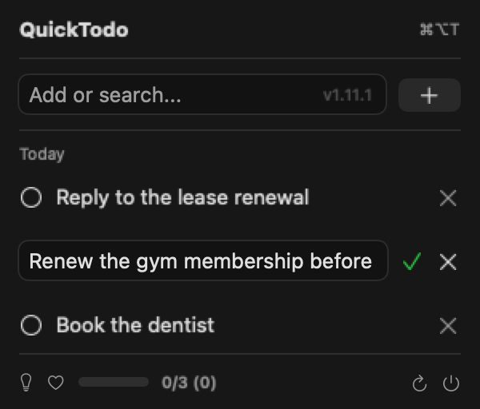

Free · Open source · macOS 13+
Your todos, in the menu bar.
QuickTodo is a native Mac todo app that lives where your clock already is. Hit ⌘⌥T, type, press Return. No window to manage, no account, no Electron.
brew tap mdopeace/quicktodo
brew install --cask quicktodoInstall details and the no-Homebrew route below.

Install
With Homebrew
Recommended — and the update path that just works.
brew tap mdopeace/quicktodo
brew install --cask quicktodo
You don't have to upgrade this yourself — QuickTodo checks for updates on launch and every few hours when you open the menu, then downloads, verifies and installs in place from its footer button.
Prefer brew? brew update && brew upgrade quicktodo does the same thing.
Without Homebrew
Grab the .app straight from Releases.
Download for macOS-
Unzip it and drag
quicktodo.appinto Applications - Launch it — the icon appears in your menu bar
xattr -dr com.apple.quarantine /Applications/quicktodo.appScreens





Everything it does
Opens from anywhere
⌘⌥T brings the list up without touching the Dock.
Repeats
Daily or weekly. Finishing one creates the next.
Move to today
Overdue todos, one row or a whole day at once.
Live search
Type in the same box you add with.
Drag to reorder
Reorder within a day. VoiceOver actions too.
Rename inline
Fix a todo's text where it sits, no re-adding.
Self-updating
Verifies the download and installs it in place.
Questions
Is it really free?
Yes — MIT licensed, and the source is on GitHub. No account, no trial, no upsell.
Where does my data go?
Nowhere. One JSON file in your own Application Support folder. Nothing is uploaded anywhere.
Why won't the downloaded app open?
It isn't notarized, and macOS 15 and later removed right-click →
Open, so the popup only offers Done / Move to Bin. Run
xattr -dr com.apple.quarantine
/Applications/quicktodo.app
once and it opens.
How do updates work?
It checks on launch, and at most once every few hours when you open the menu. The footer button then downloads, verifies and installs.
Does it start on its own?
Yes, release builds register as a login item. Turn it off in System Settings → General → Login Items.
What do I need?
macOS 13 or newer, Apple Silicon or Intel. Nothing else.